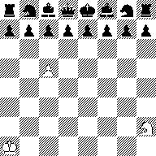
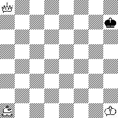
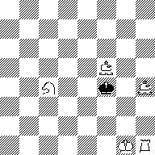
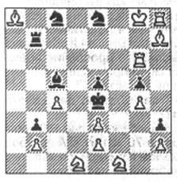

|
|
|
|
|
|
Малкин В. Шахматы и психика. 4 стр. В «бедламе» больных лечат
диаграммами. О
неблагоприятном, болезнетворном влиянии шахмат на психическое здоровье
известно давно... Эта точка зрения имеет определенное основание. Достаточно
вспомнить, что многие выдающиеся шахматисты: Пол Морфи, Вильгельм Стейниц, Гарри
Пильсбери, Эммануил Шифферс, Герш Ротлеви, Карл Торре, Акиба Рубинштейн,
Александр Алехин, а также известные советские мастера Всеволод Раузер, Лев
Аронин и Карен Григорян страдали психическими расстройствами. Я перечислил
только тех, кто прибегал к помощи психиатров... Значительно
меньше известно о благотворном влиянии шахмат на психику. Первым, кто отметил
целебное действие шахмат, был В. Стейниц.
В конце прошлого века он писал,
что игра в шахматы способствует сохранению у пожилых людей интеллектуальных
способностей, защищает мозг от увядания. Это, в свою очередь, приводит к
увеличению продолжительности жизни! Шахматы
как мощный источник радости могут украшать жизнь инвалидов, утративших
способность свободного передвижения, лишённых зрения, слуха... Мы же
рассмотрим возможности целебного воздействия шахмат на психических больных и на
лиц с нарушениями мышления. В 1961
году в солидном медицинском журнале «Невропатология и психиатрия» была
опубликована статья врача-психиатра шахматного мастера Аллы Рубинчик «О способности больных шизофренией к шахматной
игре». При лечении таких пациентов врач изначально должен найти возможность наладить
с ними общение. Это осуществить очень сложно, т.к. многие больные весьма замкнуты,
ни к чему не проявляют интерес и пресекают попытки врача начать с ним
разговор: либо вовсе не отвечают на вопросы, либо отвечают односложно. Рубинчик провела исследование
27 больных, у которых в анамнезе было указано, что они имели шахматную
квалификацию от 4 до 2-го разряда. Алла Рубинчик, не затратив значительных
усилий, вовлекла пациентов в игру. Расставленная на
столе врача доска с шахматами вызвала интерес у больных. Рубинчик сыграла с больными 60
партий, из них 47 выиграла, 7
свела вничью и 6 проиграла. Наиболее важным было то, что она доказала
сохранность памяти у больных шизофренией - никто из больных, многие годы не
игравших в шахматы, не забыл правил игры и не утратил полностью интереса к ней. Лечебный
эффект шахмат был очевиден: у больных исчезали или становились менее
выраженными многие тяжёлые симптомы заболевания - галлюцинации, бредовые идеи,
стереотипность поведения, потеря интереса к окружающим, включая собственную
семью. Один из
больных, страдавший тяжелой формой шизофрении более 20 лет, утверждавший, что
он «князь Владимир», освободился на некоторое время от бреда величия и
слуховых галлюцинаций. Он сохранил способность к игре и сумел выиграть у всех
своих товарищей. Рубинчик
пришла к заключению: у многих больных во время игры поведение становится более
естественным, они разумно комментируют партию, легче вступают в общение,
правильно отвечают на вопросы, порой беседуют друг с другом на разные темы. И
всё же некоторые больные отмечали, что у них в жизни остался интерес только к
шахматам. Казалось
бы, исследование Аллы Рубинчик должно быть продолжено... Однако у нас в стране
оно не нашло широкого признания, и лишь несколько психиатров, играющих в
шахматы, с успехом использовали результаты её талантливой работы. Теперь
позволю себе небольшое полулирическое отступление. На научные совещания я
эпизодически приношу шахматные журналы. В случаях, когда излагаемое
сообщение кажется мне неинтересным, открываю журнал и погружаюсь в шахматы. В середине 80-х годов
в Институте медико-биологических проблем проходил небольшой симпозиум по
высокогорной физиологии. Доклад читал выдающийся американский физиолог Джон Вест. Я сидел за столом и слушал,
возле меня лежал шахматный журнал... После доклада
Дж. Вест неожиданно спросил: «Скажите, вы интересуетесь шахматами, играете?» Я
ответил утвердительно и, в свою очередь, задал собеседнику аналогичный вопрос.
Он ответил, что его шахматы не очень интересуют, но сын Роберт увлечен игрой и
уже достиг силы мастера. Как бы между прочим Вест заметил, что в последние годы
в США к шахматам привлечено внимание психиатров, они используют игру при
обследовании и лечении психических больных с выраженными нарушениями
логического мышления. Я проявил живой интерес к этому сообщению. Прошло
несколько месяцев, и я неожиданно получил бандероль из США. В ней был журнал со
статьей об использовании шахмат при обследовании и лечении психических больных
с нарушениями логического мышления. В статье была серия шахматных тестов. Они
представляют интерес не только для больных, но и для здоровых. Я использовал
их в процессе проведения занятий на шахматной кафедре Российской Академии
физкультуры. Прежде чем
представить тесты, замечу, что при их
решении можно перемещать доску по
часовой или против часовой стрелки. Это в некоторых случаях
открывает путь к решению. Замечу также, что некоторые тесты смехотворно
просты (4), другие кажутся простыми (2), а некоторые для успешного решения
требуют серьёзного интеллектуального усилия (1,3). Итак, тесты. Они
представлены диаграммами. Ими в повседневной работе пользуются врачи психиатрического
центра «Бедлам» в США.  Д 1. Большинство подумает, что позиция чёрных
лучше. Это не так! На самом деле белые начинают и форсировано дают мат чёрному
королю. Найдите, как это осуществить.  Д
2.
Чёрный король может находиться на любом поле. Надо построить матовую позицию
тремя белыми фигурами: королём, ферзем и слоном. Есть поля, на
которых чёрный король в безопасности, где создать матовую конструкцию
невозможно. Найдите и укажите эти поля.  Д 3. Укажите мат в пол хода.  Д 4. Докажите, что вы не сумасшедший и найдите ход белых, после
которого не последует мат чёрному королю. Задача
проста, так как на доске всего 4 белых фигуры, которые могут перемещаться в
соответствии с правилами игры. РЕШЕНИЯ Д 1.
Вначале необходимо правильно представить положение доски и догадаться, что она
повёрнута на 180 градусов. Следовательно, чёрные фигуры находятся не на седьмой
и восьмой горизонталях, а на первой и второй. Белый король на h8, конь на а7, пешка на f4. Белые могут объявить спёртый мат с
поля f3 или d3. Как же реализовать эту возможность? 1.Ка7-с6
с угрозой 2.Ке5, и цель будет достигнута. Единственная защита — 1...Кf3. Но тогда 2.КЬ4 Ке5 (а что ещё?)
3.fe!, и на любой ход
соперника белые объявляют мат: 4.Кd3X. Позиция теста почти идентична задаче, составленной известным
проблемистом Карпентером в 1915 году. Д 2. Он
кажется простым, однако это не так. Мой опыт свидетельствует, что многие
шахматисты высокой квалификации испытывают затруднения при решении, тратят на
него 20-30 минут и более. Безопасные поля для чёрного
короля существуют: невозможно королёшм, ферзем и белопольным слоном
сконструировать, дать мат при положении чёрного короля на полях b7 и g2, а если слон
чёрнопольный, то соответственно на b2 и g7. Д 3. Задача
элементарно проста. Белые начали делать рокировку, успели переместить короля на
d1 (Кg1), сделали 1/2 хода, а завершить
её, сделав оставшиеся 1/2 хода - Лf1X, - не успели. . 4. Задача
требует концентрации внимания. 1. Лс6! Тест придумал проблемист, по
специальности врач-психиатр Карл Фабель в 1952 году. Виктор Малкин, доктор медицины, профессор |
|
|
|